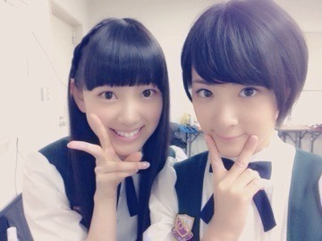
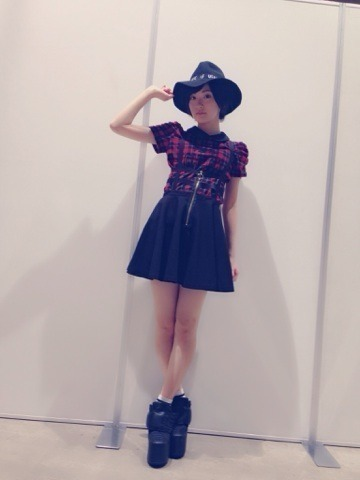
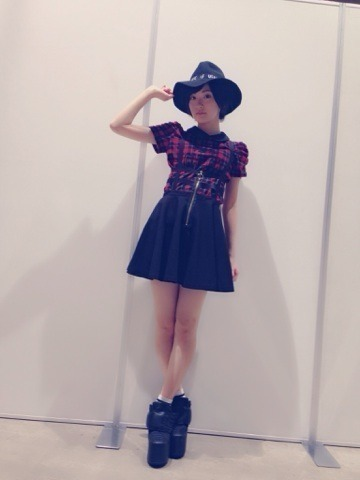
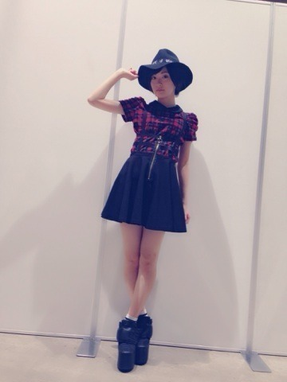
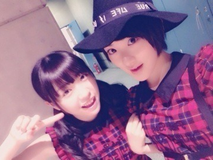
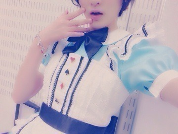

| 2014/09 28 Sun | 幕張全国、個別握手 会ヽ(・∀・)ノ |
昨日、今日と幕張メッセにて全国握手会と個別握手会がありました〜ヽ(・∀・)ノ
来てくださった皆さんありがとうございましたヽ(・∀・)ノ⭐︎
ほとんどがＭステのアリスいこちゃんのお話しでしたね〜！！
皆さん見てくれてありがとうっっ！！
全国握手会はみおなとペアだったよん。

仲良しこよし

この2人組で推してるって方多かった！
個別握手会のお洋服〜
 


ハットはこの前の名古屋の個別でも被ったやつ！！
それ以外はトップスからシューズまで全部one spoです！
みりあとおそろだった

みりあたんきゃわたん〜

SKEさんへの挨拶、タイミングが合わず行けませんでした(´；Д；｀)残念
皆さん、お疲れ様でした〜！

へばなっ☆彡
コメント(545)
2014/09/28 21:00